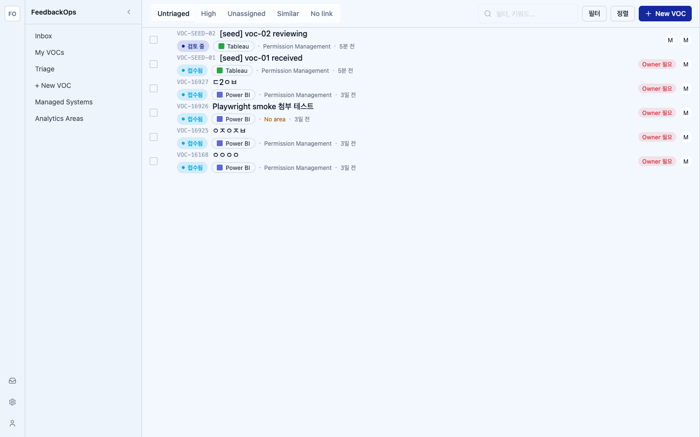
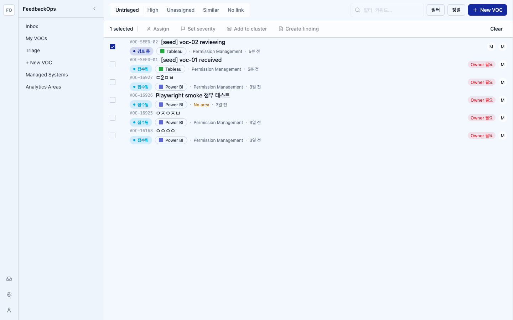
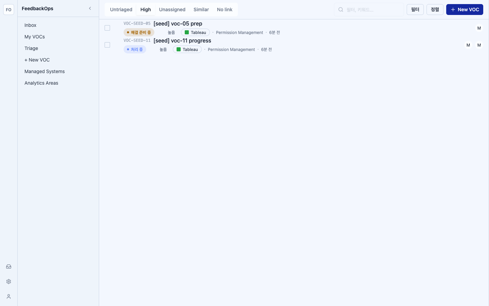

Route /vocs?view=inbox at 1440. Mock-login (mock-admin-1), seeded DB (6 VOCs).
Baseline: docs/design-prototype/screenshots/final-baselines/voc-inbox-detail.png (list+detail; the list region is the comparison target — no list-only baseline exists).
Result: HIGH = 0 MEDIUM = 0 LOW = 2 — merge OK (≤2 LOW, no HIGH/MED).



| Region | Category | Prototype | Impl | Severity | Resolution |
|---|---|---|---|---|---|
| toolbar.tabs | copy | Untriaged / High / Unassigned / Similar / No link (English) | Untriaged / High / Unassigned / Similar / No link | — | match |
| toolbar.tab.unassigned | token | urgent → red label | text-danger on Unassigned tab | — | match |
| toolbar.tab.counts | data-shape | numeric badges 9/7/12/4/5 | no count badge | LOW | defer — GET /vocs has no per-tab count facet; counts are synthetic prototype data (follow-up issue) |
| toolbar.search | copy | placeholder "필터, 키워드…" | placeholder "필터, 키워드…" (disabled — search deferred) | — | match (value/onChange deferred: no search endpoint) |
| toolbar.action | chrome | primary Button "New VOC" + plus icon | primary Button "New VOC" + plus icon | — | match (was a text link) |
| row.lead.checkbox | chrome | row checkbox | Checkbox wrapper, stopPropagation | — | match |
| row.lead.severity-bar | data-shape | colored SeverityIndicator | dimmed (seed severity = null) | — | data-driven; renders coloured when severity present |
| row.title.id | typography | mono display id, dimmed | font-mono text-text-disabled | — | match |
| row.title.similar | data-shape | "N similar" layers chip | chip rendered only when similar_count > 0 (seed = 0 → hidden) | — | data-driven; wired |
| row.meta.status-badge | chrome | ReporterStatusBadge | ReporterStatusBadge (검토 중 / 접수됨) | — | match |
| row.meta.severity-badge | data-shape | SeverityBadge chip | SeverityBadge rendered only when severity ≠ null (seed = null → hidden) | — | data-driven; wired |
| row.meta.managed-system | chrome | system name | ManagedSystemPill (Tableau / Power BI) | — | match |
| row.meta.area | data-shape | area name OR amber "No area" | resolved area name; amber "No area" when area_id null | — | match (wired via /analytics-areas) |
| row.meta.dot-sep | spacing | 2px muted dot separators | 2px bg-text-muted/60 dots | — | match |
| row.meta.linked-finding | data-shape | ↔ FIN-xxx cyan ref | not rendered | LOW | defer — VocListItem has no linkedFindingId field (follow-up issue) |
| row.trailing.owner | chrome | owner Avatar OR red "Owner 필요" | UserAvatar when owner resolved; "Owner 필요" red badge otherwise | — | match |
| row.trailing.reporter | chrome | reporter Avatar | UserAvatar (initial) when reporter resolved via /actors | — | match |
| row.selected | token | 2px left lime accent bar + tinted bg | before:bg-accent-primary bar + bg-surface-row-selected | — | match (left bar, not ring) |
| list.bulk-bar | chrome | "N selected · Assign / Set severity / Add to cluster / Create finding · Clear" | same copy + icons; 4 mutating actions disabled, Clear wired | — | match (mutations deferred — no batch endpoint) |
VocListItem has no linked_finding_id. Element coded to render only when supplied (today: never).GET /vocs returns no per-tab count facet; prototype numbers are synthetic. badgeCount omitted.severity; seed rows have severity = null so both are hidden (correct).